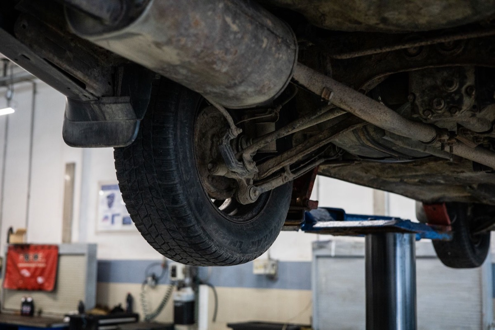
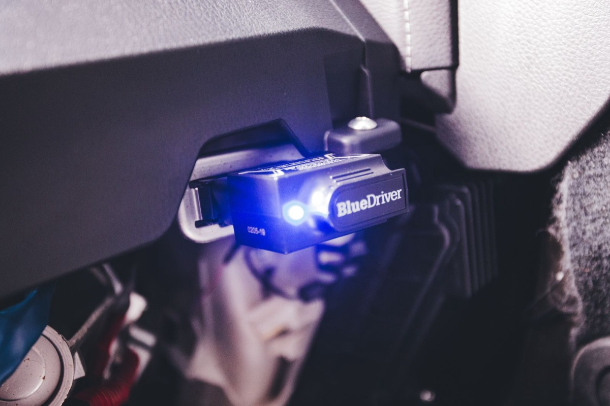
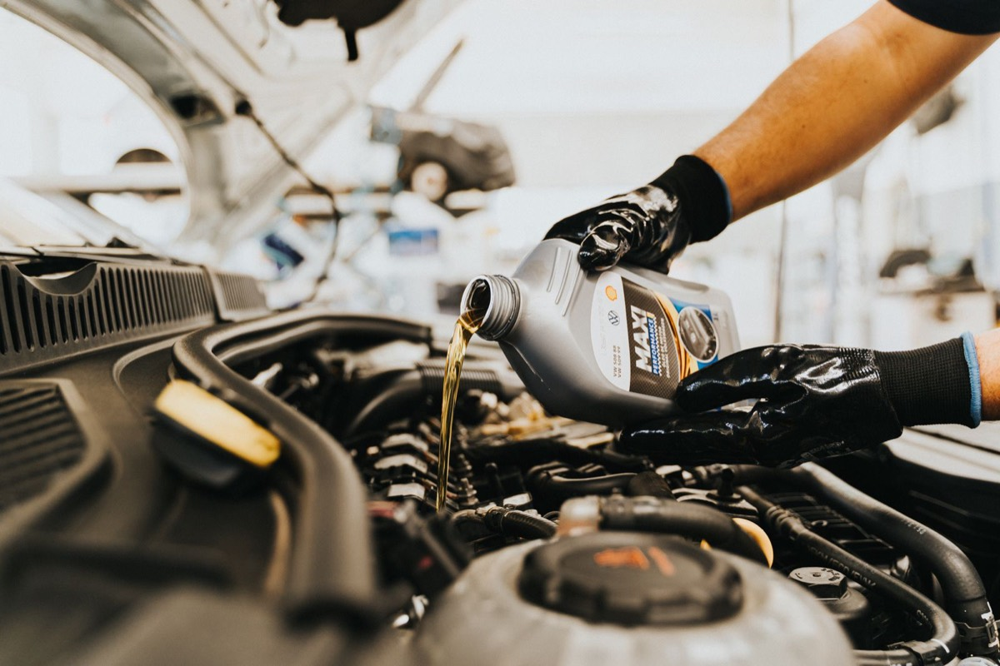
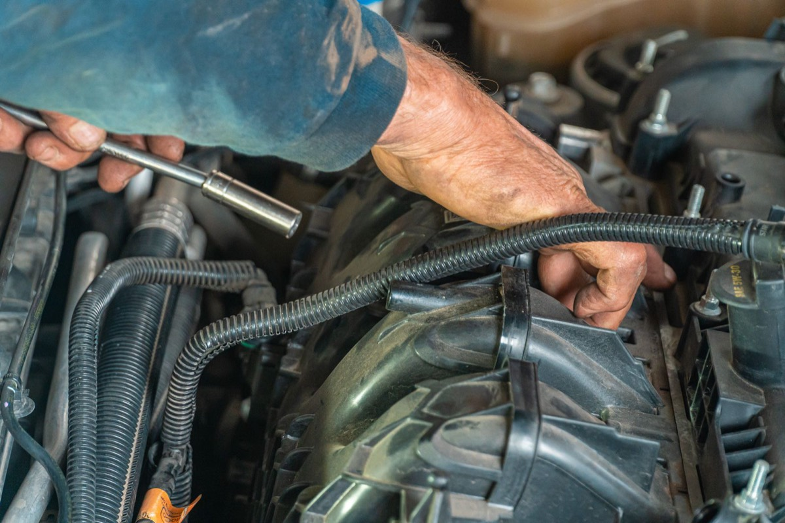

Transmission Shudder: Misfire, Fluid, or Converter?
A shudder that arrives under light throttle, holds steady at a constant speed, and disappears the moment you press harder or let off is a converter clutch problem. A shudder that is worse under load and follows engine rpm rather than vehicle speed is a misfire. Those two sentences cover most of the
A shudder under light throttle at steady speed is a friction problem, and the cheapest part that addresses it costs $7.99. ATP’s 2 oz shudder fix is a friction modifier, not a repair — it is also, at that price, the cheapest way to find out whether the problem is in the converter clutch at all. The diagnosis step ahead of it costs nothing and rules out the other half of the cases.
GM uses three different automatic transmission fluids across the trucks and SUVs that shudder, and they are not interchangeable: DEXRON-VI for the six-speeds, DEXRON HP for the eight-speed, and DEXRON ULV for the ten-speed. The ULV bottle is the cheapest of the three at $9.99, and putting it in the wrong transmission is worse than leaving the old fluid in.
A shudder that arrives under light throttle, holds steady at a constant speed, and disappears the moment you press harder or let off is a converter clutch problem. A shudder that is worse under load and follows engine rpm rather than vehicle speed is a misfire. Those two sentences cover most of the cases, and telling them apart costs nothing but a scan tool you may already own.
The reason it matters is money. A misfire diagnosed as a transmission ends with a rebuild you did not need. A converter clutch shudder left alone long enough ends with the same rebuild, because the clutch material it is shedding goes into the fluid and from there into everything else. Every price below was read on a live listing on 17 November 2026.
Why the shudder happens at exactly that throttle
The converter clutch is a plate that locks the engine to the transmission to stop the slip that wastes fuel at steady speed. It engages progressively, and the friction material has to hold a very small difference in speed without grabbing. When the fluid’s friction behavior drifts — from oxidation, from the wrong fluid, or from material the clutch has already shed — that small difference stops being smooth and becomes a rapid stick-slip. You feel it as a fast buzz through the floor and the wheel rather than a single thump.
Light throttle is where you feel it because that is where the clutch is applied at its minimum clamping force. Press harder and the clutch locks fully; lift and it releases. That is why a shudder that vanishes under either input is a clutch and fluid story rather than a broken gear.

The twenty-minute test that splits the two
Read the misfire counters before you buy anything. A scan tool that shows per-cylinder misfire counts, live, while the symptom is happening, is the whole diagnosis: counters that climb on one cylinder mean ignition, and counters that stay at zero while the vehicle shakes mean the engine is running clean and the vibration is downstream of it.
The same tool reads transmission fluid temperature, which is the second half of the test. A shudder that only appears once the fluid is fully hot points at friction behavior that changes with temperature. A shudder present cold and gone hot points somewhere else entirely, including the engine mounts.
Motive Products 1735 Power Fill Pro → $91.99 · 4.5 (42 reviews) · checked 17 Nov 2026

Three fluids, and the one your truck takes
This is the part that goes wrong most often, because GM sells three automatic transmission fluids for the same trucks across different model years and the bottles look alike.
DEXRON-VI is the six-speed fluid — 6L80 and 6L90. ACDelco’s quart is $13.99 with 4.75 stars across 16 reviews, and the gallon is $52.99 across 7. DEXRON HP is the eight-speed fluid and it is a different spec entirely: Mobil 1 Synthetic LV ATF HP is $15.99 a quart with 5.0 across 14 reviews, or $75.99 for a case of six with 21 reviews. Its own listing says it is “approved and licensed by General Motors against DEXRON HP ATF.” The fitment page behind that listing returns 2,176 applications, and its fluid filter offers DEXRON HP alongside DEXRON III, II and VI — so it is a multi-specification listing, and the specification on your filler cap is what decides, not the bottle’s front label.
DEXRON ULV is the ten-speed fluid, and it is the cheapest of the three at $9.99 a quart for Valvoline ULV, or $56.34 for six. Read the fitment before you buy it: that listing returns exactly two applications, “GM DEXRON ULV” and “Ford MERCON ULV.” Its own description says it is engineered for the nine- and ten-speed transmissions. It is not a universal fluid and it is not a substitute for the other two — buying the cheap bottle for a six-speed is how a fluid service becomes a shudder instead of fixing one.
Mobil 1 Synthetic LV ATF HP, one quart → $15.99 · 5.0 (14 reviews) · checked 17 Nov 2026
ACDelco DEXRON-VI, one quart → $13.99 · 4.75 (16 reviews) · checked 17 Nov 2026
Valvoline ULV ATF, one quart → $9.99 · 5.0 (1 review) · checked 17 Nov 2026

What the friction modifiers actually are
An additive is the cheapest honest experiment in this whole job, provided you read what it claims to do rather than what the video said.
ATP AT-222 is the only product on the page whose name says shudder: 2 oz of “highly concentrated synthetic friction modifier designed to stop torque converter shudder,” $7.99, 5.0 across 3 reviews. Two ounces goes into a pan that holds quarts, which is why it is a test and not a service.
Lucas Anti-Shudder Additive is a different claim in a much bigger bottle — 16 oz, $21.99, 5.0 across 8 reviews — and its listing says it is “formulated to eliminate squawk noise in transmissions and differentials, particularly at start-up.” Squawk at start-up is not the same complaint as a steady-speed shudder, and the listing is worth reading for that distinction.
Lucas Transmission Fix is the most-reviewed additive here at $13.98 with 4.75 across 21 reviews, and it is a conditioner rather than a friction modifier. SeaFoam Trans Tune at $11.99 is a petroleum-based cleaner aimed at varnish and deposits. Hot Shot’s Secret Shift Restore is a Group V ester at $26.99, and its listing describes dissolving gum and varnish rather than altering friction.
One product named in the highest-viewing videos on this subject — an “instant shudder fix” — is not sold by the retailer checked here. Four separate searches on Summit Racing for it and for its brand returned nothing but an unrelated suspension part, so there is no price on this page for it and no review count. If that is the product you want, buy it where you can read its own listing rather than taking a number from a video.
ATP AT-222 shudder fix, 2 oz → $7.99 · 5.0 (3 reviews) · checked 17 Nov 2026
Lucas Transmission Fix, 24 oz → $13.98 · 4.75 (21 reviews) · checked 17 Nov 2026

The filter note that is worth reading twice
The ACDelco filter listed for the eight-speed applications is $29.99 with 5.0 across 4 reviews, and the fitment page behind it carries a line most listings do not: “FILTER REPLACEMENT NOT REQUIRED WHEN FOLLOWING TSB’S: TSB 16-NA-175 OR 18-NA-177.” That is the manufacturer’s own position, printed on the part listing, that a fluid service done to the bulletin procedure does not call for a new filter. Read it as a question for your dealer rather than a rule for every truck, because the same page also lists a second-generation filter as required on some applications.
The ATP kit at $47.99 with 4.0 across 9 reviews is the direct-fit alternative, and its fitment list runs to 1,538 applications — a broad list that spans more than one transmission family, so treat it as a starting point and confirm your code on the applications tab before ordering.
The gasket is where the review counts mislead, and it is worth seeing how. LubeLocker’s most-reviewed pan gasket carries 4.75 stars across 81 reviews at $32.95 — nearly twice the reviews of the next most-reviewed part here. Its own fitment list returns eight applications naming the Turbo-Hydramatic 250 and 350. It is not a 6L80 gasket. The 6L80 version of the same gasket is a separate part number at the same $32.95, and its fitment list returns exactly one application: a Chevrolet with the 6L80 code. One review against 81, for the part that actually fits.
The ACDelco alternative for the six-speed is $27.99 with 4.75 across 11 reviews, and its fitment list returns 450 applications that are all 6L80. That is the listing to buy from if you want a paper trail that the part is right.
ACDelco 24295812 transmission filter → $29.99 · 5.0 (4 reviews) · checked 17 Nov 2026
ACDelco 24224781 pan gasket, 6L80 → $27.99 · 4.75 (11 reviews) · checked 17 Nov 2026
The thermostat that fails in the wrong direction
The cooler bypass valve on these transmissions is a thermostat. When it works, it holds fluid out of the cooler until the transmission is warm and then opens. When it sticks, the failure that costs a transmission is the one where fluid stops reaching the cooler — and it is silent, because nothing on the dash reports it. PPE’s own product description says it plainly: the OEM valve “has restrictive internal passages; and when the OEM valve fails in the open position, transmission fluid doesn’t reach your cooler.”
TransGo’s delete kit is $15.43 with 5.0 across 10 reviews, and its listing states the benefits plainly: “provides all-time cooler flow regardless of temperature,” “eliminates thermostatic assembly,” and — the one that saves an argument at the counter — it “allows you to accurately check fluid level immediately after install without having to wait or go through a warm-up cycle.” Its fitment list covers the 6L80, 6L90, 8L90 and Allison codes.
PPE’s machined replacement is $80.99 across three part numbers: 125068000 for the 6L80 at 4.75 stars across 18 reviews, 125071000 for 2015–2018 half-tons at 4.5 across 9, and 125070000 for 2019–2023 at 4.5 across 8. All three add a magnet-equipped service plug that the factory part does not have. The 6L80 version carries a note that matters: “Fits vehicles equipped with 3/8 in. cooler lines only.”
TransGo 6L80-CLR-BYPASS delete kit → $15.43 · 5.0 (10 reviews) · checked 17 Nov 2026
PPE 125071000 bypass valve, 2015–2018 → $80.99 · 4.5 (9 reviews) · checked 17 Nov 2026
When it is past fluid
Two parts on this page exist for the case where the shudder has already done damage, and both should be read as a warning rather than a shopping list.
TransGo’s SK 8L90 valve body repair kit is $167.14 and carries 3.0 stars across 2 reviews — the lowest rating of any part here — and its listing notes that it “requires AFL-G-TK tool kit,” which is not included. A valve body job with a special tool requirement and a two-review sample is a job for a shop, not a driveway.
The other honest limit is the fluid level itself. The level is checked after a warm-up cycle rather than cold — that is exactly what TransGo’s listing is promising to skip, “without having to wait or go through a warm-up cycle” — which is why the fill tools exist at all: Motive’s Power Fill Pro is $91.99 with 4.5 across 42 reviews, and OTC’s fill-and-extract kit is $405.99. A $42.99 flexible-spout funnel reaches the same port more slowly, and for a single service it is the part that makes sense.
OTC 4848 flexible spout funnel → $42.99 · 5.0 (4 reviews) · checked 17 Nov 2026
Is any of this legal in California?
None of the parts on this page is an emissions control device, and none carries a CARB Executive Order number. That is expected rather than suspicious: an EO is what an add-on or modified emissions part carries after CARB has evaluated it, and a transmission fluid, a pan gasket and a cooler bypass valve are not that category of part.
The statute that governs the emissions side is Cal. Veh. Code § 27156, and one line in it is the reason a shudder belongs in a conversation about smog at all. Subsection (b) requires that a vehicle “is equipped with the required motor vehicle pollution control device that is correctly installed and in operating condition,” and then:
“No person shall disconnect, modify, or alter any such required device.”
A misfire misdiagnosed as a transmission is how that line gets broken. Unburned fuel leaving a misfiring cylinder goes straight into the catalytic converter and burns there instead of in the cylinder, and a converter cooked that way is a required device no longer in operating condition. The $7.99 friction modifier and the scan tool reading that cost nothing are the two cheapest ways to make sure the problem you are fixing is the problem you have.
Summit Racing carries a blanket notice on its product pages — “Some parts are not legal for use in California or other states with similar laws / regulations” — and it appears site-wide, so it is not a statement about any one part here.
What to do first
Read the misfire counters while the symptom is happening. If one cylinder is counting, stop and fix the ignition before touching the transmission. If nothing is counting, note the fluid temperature at which the shudder starts, check the fluid level to the procedure your transmission specifies, and try the $7.99 friction modifier before anything more expensive. If a fluid service is what it needs, buy the fluid by the specification on the cap rather than by the color of the bottle, and remember that the three GM fluids on this page do not substitute for one another.
Topics
- Engine & Intake